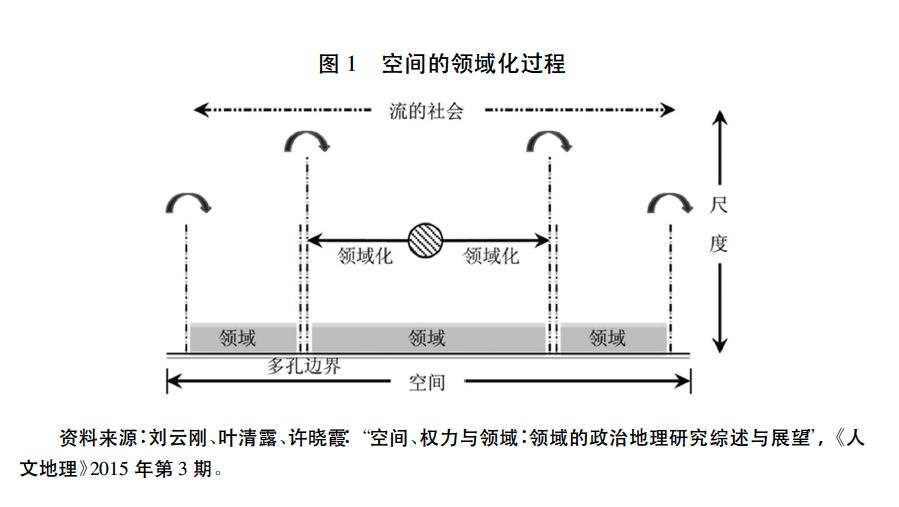
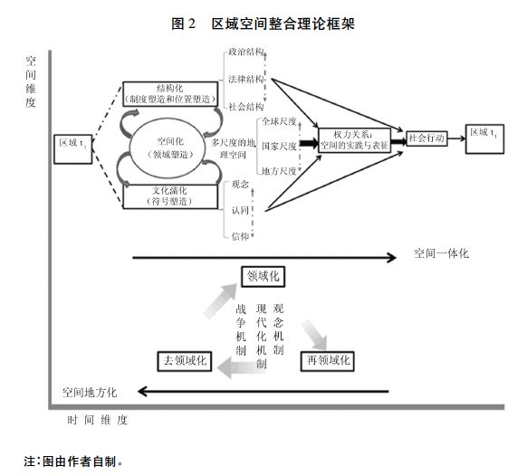

收录于合集
邢瑞磊
武汉大学政治与公共管理学院副教授、武汉大学经济外交研究中心研究员
戴安琪
武汉大学经济外交研究中心研究助理
【摘要】在反全球化运动和世界秩序动荡的情况下，同“区域化世界”相关联的多重复合秩序现象，成为国际关系研究亟须讨论的重要理论命题。多重复合秩序不仅是全 球化时代国际关系演变的现实，也对国际关系理论的发展不断提出新的要求。对国际关 系理论而言，在全球化、区域化和民族国家体系共存的情况下，如何有效突破“国家中心 主义”范式局限，解释多重复合秩序的生成机制和内在动力，是理论创新的关键之一。本 文提出的基于竞争性区域化现象的区域空间整合理论，综合政治地理学和空间政治学的 研究成果，以区域空间内的权力关系为本体，分析区域空间内领域塑造、符号塑造、制度 塑造和位置塑造动态机制推动下的空间化、文化濡化和结构化过程，探讨其对空间再尺 度化和权力关系重组的影响。以此为基础，本文描述和解释了多重复合秩序的生成机理 和“区域化世界”图景的空间含义。
【关键词】区域空间 复合秩序结构 再领域化 再尺度化 权力关系
全球化过程中国家自主性与全球秩序的关系可谓是国际关系研究的时代性主题。 围绕着两者关系的争论，构成了现代国际关系学具有终极意义的“个体与秩序关系” 问题。事实上，关于自利国家和国际秩序的讨论一直伴随着国际关系的实践和理论研究。自17世纪威斯特伐利亚体系确立以来，国家间的权力竞争和世界秩序构建经常表现为主权国家之间的冲突与合作。而国际关系学则从冲突与合作现象出发，依据不同的理论预设，对国家自主权和世界秩序的关系问题进行了探索，相关的理论解释呈现出周期性的摇摆反复，并以理论“大辩论”方式构成了国际关系理论研究的基本框架和话语体系。例如，源自马基雅维利和霍布斯的政治现实主义思想，预设了无政府状态下国家需要为生存自我负责的理论前提，进而强调国家间有意识的权力制衡是实 现相对秩序的可行途径; 源自康德的世界主义哲学理念和洛克的自由主义诸理论，则预设无政府状态的自然秩序赋予国家基本的生存权，国家间的竞争与合作现象是市场“看不见的手”的自发调节结果，因而，在自由贸易、共和观念和国际制度的推动下，自利国家间能够形成竞争与合作共存的自由秩序。此外，从伦理角度关注权力、秩序和 正义的“英国学派”，以及强调历史话语和生产权力的马克思主义理论，也在不同的理 论预设前提下，讨论了自利国家与整体秩序之间的多元关系以及实现两者共存的可能途径。
进入21世纪后，在经济全球化的背景下，国际关系的经验现象集中表现在经济全球化、区域化以及民主化迅猛发展的同时，全球问题、大国地缘竞争与非传统安全问题交织涌现。在这种情况下，“自利国家与整体秩序”问题开始演变为在全球化与区域化的整合过程中，基于主权国家自主原则的“单边主义”政治经济政策的“正当性”问题，以及传统大国和新兴国家对现行世界秩序的认知差异和现实碰撞。2008年国际金融危机之后，这种“个体与秩序”之间的张力达到了顶峰，欧美世界普遍出现反全球化思潮和运动，“单边主义”政治经济政策成为传统大国的优先选项，这种变化集中出 现在一体化程度最高，长期被视为经济全球化和多边主义秩序“代言人”的欧盟。在债务危机、难民危机、恐怖主义袭击、英国脱欧、民粹政治力量崛起一系列事件的冲击 下，欧盟出现了明显的内部分化现象。这些似乎都预示着国家自主、自由民主政治秩 序和全球秩序之间关系的复杂性。
反全球化的思潮事实上是“个体与秩序关系”这一核心问题的一个变体，而国际关系研究者通常选择从“宏观全球结构”和“微观国家互动”两个视角解释个体与秩序 的张力关系，进而讨论反全球化和世界秩序动荡的机理。在宏观全球结构视角下，研究者延续宏观历史分析传统，以全球资本主义的结构性变化为线索，探究资本力量、国家权力以及世界霸权秩序更替之间的内在联系。宏观结构分析路径依托的理论框架 是卡尔·波兰尼的存在于市场力量和社会保护之间的“钟摆效应”以及乔瓦尼·阿瑞基有关资本主义由贸易扩张到金融扩张的全球经济周期转换导致的世界霸权秩序兴衰。具体而言，结构分析视角把逆全球化现象和世界秩序动荡归因于“新自由主义” 理念带来的政治经济后果。在研究者看来，经济全球化冲击了基于“民族国家”、工业社会结构和传统政治文化设计的福利国家制度，激化了“福利经济”与全球竞争、社会变迁与福利制度滞后的内在矛盾。换言之，经济全球化打破了社会、经济、政治和国家疆界之间的统一性，导致权力的结构、分配和实施方式皆发生了重大转变。更重要的是，在资本金融化时代，社会经济不平等与贫富差距不断攀升，导致政治参与的 非对称性愈发突出。跨国经济利益集团“捕获政府”的可能性上升，政治决策权由议 会逐步转向行政机构，而民主选举无力阻挡社会经济不平等，从而导致政治衰败及民 众抵抗运动的兴起。简言之，这种宏观解释强调在经济全球化的推动下，随着全球资本力量的上升，全球市场、国家自主与民主原则之间逐渐形成了一种新型的三元结 构关系，体现出“难以三全”的复杂张力关系。
在微观国家互动视角下，研究者以民族国家体系及其权力结构演变为主线，从后 冷战时期美国相对实力下降的客观现实出发，强调在全球化推动下的国际秩序转型 期，霸权国政治权威的衰落及其内部危机是导致世界失序和治理危机的主要原因。同时，以联合国、国际货币基金组织、世贸组织为代表的国际机构，受民族国家自主权的 限制，全球治理能力不足，无法形成新的政治权威，难以承担重构全球化时代的世界秩 序的任务。政治权威无法顺利更替的后果是暴力冲突和极端主义在民族、文明和地缘 政治断层带持续爆发，全球化的负面效应被无限放大。总之，从微观研究路径来看，以 中国为代表的新兴力量向国际社会提供公共产品，以欧美民粹主义崛起为表现的内部 治理危机，以欧盟前景充满不确定性为代表的地区秩序失调，都预示着在新旧政治权 威更替的转型过程中，第二次世界大战结束以来美国主导下的自由主义世界秩序似乎正走向尽头。
这两种研究路径分别从全球资本结构和民族国家互动的角度考察了全球化和世 界秩序动荡的内在机理，在国家自主与全球资本同一性逻辑张力的框架下，辨析国家 自主性、跨国区域整合与全球秩序的复杂关系。换言之，全球秩序、区域整合和国家自主竞争共同构成了全球化时代国际关系研究的“主旋律”，三者之间复杂关系的理论 解释成为这个时代理论更新诉求的重要来源。归根结底，宏观结构分析和微观能动解释都是在尝试回答这个根本性问题。尽管这两种解释的逻辑出发点不同，但都是在
“单一世界秩序”的理论预设基础上展开的，或强调全球资本经济秩序，或强调自由主 义的世界政治结构。然而，现实地看，世界是单一秩序的么? 回顾历史可以发现，这种“单一世界秩序”的理论预设事实上源于特定地区的经验现象归纳。进一步而言，其 思想基础源自欧洲从威斯特伐利亚国家秩序到二战后的一系列历史实践，是欧洲大国 乃至整个西方以法律与政治方式规定国内政治结构和国际秩序的尝试。随着西方秩 序的全球性扩张，威斯特伐利亚体系的国际秩序框架延伸至全世界，涵盖了不同的文 明和地区。然而，在经济全球化的影响下，现实世界出现的全球化、区域化、国家与地 方事务国际化并行发展的现象，正在影响国际关系研究的走向。但“单一秩序”的理 论预设并未随经验现象变化而更新，在面对全球化、区域化和国家能力强化的共时现象，包括逆全球化运动、民粹主义政治和地方国际化等在内的介于国内与国际问题之 间的重大问题时缺少解释力。
在这种情况下，“多重秩序”的理论假设开始受到国际关系学者的重视。安德 鲁·赫里尔在《全球秩序的崩塌与重建》中对 21世纪的全球秩序性质进行了全方位考察。在全球化替代方案部分，赫里尔着重提出了“一个世界，还是多个世界”的基本 命题。在赫里尔看来，一方面，我们处于资本主义全球化和霸权大国为轴心的单一全 球政治体系; 另一方面，区域和区域层面上的实践正在推动多重的区域化国际体系的发展。同样，阿米塔夫·阿查亚在批判伊肯伯里“自由利维坦式”的“霸权世界秩序”论述基础上，以“复合影院”为喻，描述了多重复合的世界秩序图景。在阿查亚看来，全球已经初现区域性世界( regional worlds) 和全球协作( world concert) 并存的政治秩序。在“复合世界秩序”中，美国将同新崛起国家共享权力和权威，大国在各自所在 区域，整合区域资源，建构区域秩序。总体而言，“多重世界”和“复合影院”理论都尝试建立“多重秩序”假设，从区域化角度解释全球秩序、区域整合和国家自主竞争关 系的内在复杂性，为“个体与秩序”问题解决提供了新方法。这种“多重秩序”理论预 设是对全球资本与国家权力互动理论传统的一种超越，为我们审视全球化进程对世界 秩序和国家自主性的潜在影响提供了新的视角。
在全球化和民族国家共存的今天，位于全球和国家“中间地段”的区域化理论更 为灵活。因为区域化是一个跨学科的研究领域，既有国际关系理论关注的国际区域化 现象，也有国家内部的区域化趋势。更重要的是，“区域”是一个多层次概念。它可以指代民族国家基于地理邻近性形成一定制度化水平的跨国政治经济实体( 欧盟、东盟) ，也可以指在特定领域内开展松散合作的协议框架或论坛( 北美自由贸易协定、亚太经合组织) ，还可以指代不受地理邻近性影响的跨洲际开放性合作框架( “一带一路”倡议、金砖国家机制) 等跨国区域性合作。此外，区域化还可以指代在全球化的影响下，构成民族国家政治单元基石的地方、都市以及跨边界地区之间开展的合作框架， 例如，都市圈、大湄公河次区域经济合作等。由于超越了传统的自然地理范畴和国家 疆界的局限，区域能够以更为立体也更为多层的空间维度，成为连接全球化和国家关 系的“桥梁”，这是一个更容易构建和解释多重复合世界秩序现象的理论视角。
综合上述考量，本文尝试以多尺度( multi-scale) 的“区域空间”概念为分析单元，以区域空间领域(territory)的生成和强化机制及其推动的领域化、去领域化和再领域化过程为主线，对当前方兴未艾的区域化现象作出新的解读。笔者认为，区域化是旨在实现领域塑造的空间化( spacing) 机制、实现符号塑造的文化濡化( encultura-tion) 机制以及实现制度塑造和位置塑造的结构化( structuration) 机制三者合力下的产物。上述三个机制在区域空间整合过程中的分工和彼此间的关系是理解区域化现象的关键，也是我们观察当前多重复合世界秩序的一个重要理论视角。本文第一部分主要梳理了在民族国家和全球化语境下的区域化现象，旨在剖析这段特定历史时段内区 域化动力机制的演变过程; 第二部分在评述区域化现象相关学理研究的基础上，详细介绍“区域空间”概念的学理起源及区域空间整合的基本理论框架; 第三部分以欧盟为例，在区域空间理论视角下重新解读欧盟的多重秩序性质，旨在展现欧洲一体化进 程中多尺度领域化建设的问题和影响区域整合的关键机制。
国际区域化的发展脉络与动力
冷战期间，威慑政策作为一种主要的国际关系理论实践，为避免核战争、维持“冷本文旨在对我们正在步入后西方世界秩序这一说法进行认真思考。本文的目的有二: 第冷战结束以来，经济全球化似乎成为不可逆转的趋势，代表了世界政治与经济发 展的主轴。在全球化的冲击下，威斯特伐利亚体系内的民族国家主权、政府体制以及 政治过程等皆发生了重要变化。与此同时，一种与全球化并行不悖的区域化进程也在 快速发展。 区域化已经成为全球范围内的普遍现象，在区域主义理念的指导下，出现 了许多活跃且具实效的区域性组织，并成为影响国际关系乃至国内政治的重要力量之一。根据主要动因的演变，区域化的发展大致可分为基于安全的“旧区域主义”、由资本和市场推动的“新区域主义”和全面发展需求的“竞争性区域主义”三个阶段。
（一）安全驱动的区域化 (20世纪50年代至70年代末)
二战结束之后，在国际多边机制纷纷建立的基础上，区域性组织随之兴起。不同于20 世纪30 年代“纳粹的欧洲新秩序”和“大东亚共荣圈”，1945 年《联合国宪章》以专门条款的方式，确认了区域组织的法律地位及其同联合国的特殊关系，规定联合国 并不排除“用以应付关于维持国际和平及安全而宜于区域行动之事件”的区域协定或 区域机构的存在，区域组织被赋予了充分的合法性。随后，美苏基于冷战对峙的需要， 在经济和军事领域展开了一系列竞争，很多国家为了减轻美苏对峙导致的战略压力，选择了区域合作来维护自身安全，谋求经济发展。在这一时期，以欧洲一体化的成就 最为显著，欧洲联合是美国遏制苏联的产物，也是欧洲各国为谋求集体安全和经济发 展主动开展区域性合作的结果。在这种背景下，第一波区域化开始兴起。
这个阶段区域合作的发展动力主要是安全因素，并伴随着发展中国家的民族解放 运动而具有民族主义特征。 正如庞中英所言: “主权的民族国家在经济和安全上的联合，这种联合的水平高低不同，但目的只有一个，就是增强集体的竞争力、开辟共同利益的新领域、谋求集体安全。”因而，它也被称为“安全区域主义”或“旧区域主义”。这个阶段的全球合作由于受两极格局的影响，在地理和意识形态空间上被人为割裂， 尚处于停滞状态。总之， 冷战背景下的区域合作存在种种局限: 如封闭保守的经济政策、脆弱的机制建设、帝国主义干涉色彩下的合作方式以及部分国家不发达程度的加深。
（二）市场驱动的区域化（ 20世纪80年代至21世纪初）
20世纪70年代末，冷战对峙缓和、布雷顿森林体系瓦解及欧美国家为解决“滞胀”问题而推动强调自由市场竞争的新自由主义经济政策，这些都意味着国际政治经济环境发生重大转变。20世纪80年代中期，旨在遏制贸易保护主义的“关贸总协定”得以签署，全面改革多边贸易体制的“乌拉圭回合谈判”成为推动自由贸易的主要力量，经济全球化由此兴起。苏联解体之后，美国为领导世界经济发展、输出自由民主思 想，改变了冷战期间的“遏制”战略，以经济自由化和政治民主化两种方式推行后冷战时代的全球战略。
而 经济全球化和美国全球战略转型共同推动了市场驱动的区域化发展。相应地， 区域合作领域开始由安全领域转向经济、文化和环境等多个领域 。很多发展中国家以经济自由化方式推动国内经济改革，努力融入世界自由市场体系。当然，这段时期更是欧洲一体化深入发展的关键时期: 以 1987年《欧洲单一法令》生效为标志，欧洲一体化开始进入由市场驱动的区域化阶段，实现了资本、人员、服务和货物的自由流动， 在共同货币和财税整合领域取得了一定进展，成为第二波区域化即自由市场驱动的“新区域主义”的主要代表。
在“新区域主义”阶段，在市场竞争的推动下，跨国公司、利益集团、非政府组织对地区化产生了深刻的影响 。跨国资本力量的不断壮大，需要平衡国家内部与区域系统两个层次的力量。第二波区域化引发了一场经久不息的讨论，即区域主义究竟是经济全球化的障碍还是“垫脚石”。在一些经济学家看来，区域化会导致世界经济的“模块化”，阻碍世界范围内市场自由化进程，进而威胁全球多边贸易原则的一致性，造成贸 易规则重叠的“意大利面碗效应”。前美国财政部部长劳伦斯·萨默斯则认为，区域化是通往世界自由化的最佳途径，在经济全球化遭遇困境时，国家可以把区域作为“中转站”，协调国家与全球系统的关系，为通往全球化奠定基础。此外，区域主义与民族主义的关系也成为新区域主义的讨论热点。一些学者认为，新区域主义是民族主义的对立面，是经济全球化对国家内部事务的一种介入。
一些学者则认为，区域主义在提高国际经济、政治和安全合作水平的同时，还具有巩固和推动民族国家建设，提高民主化水平，构建国际规范与价值，提高国际和地区合作透明度，推动国家与国际组织责任性(accountability) 等诸多积极作用，并能协助国家管理，减少全球化和区域化对民族国家的冲击。从这个意义上讲，区域主义和民族主义是相辅相成的正向关系。
（三）全面发展需求驱动的竞争性区域化 （21世纪至今）
进入21世纪以来，以市场自由化和多边主义为内核的经济全球化开始遭遇挫折。自 2001年以来，世界贸易组织的多哈回合谈判无法达成一致，全球范围的多边贸易协议谈判长期停滞。在此背景下，以“跨太平洋伙伴关系协议”(TPP) 和“跨大西洋贸易与投资伙伴关系协定”( TTIP) 为代表的“区域小多边主义”成为欧美国家的替代选项。同时，随着新兴国家的经济崛起，以“一带一路”倡议、“亚投行”、“金砖国家机制”为 代表的开放性区域合作机制，成为发展中国家偏爱的区域合作选择，类似的区域性和双边协议大量涌现。根据世界贸易组织的官方数据，目前向 WTO通报且已生效的区域性和双边协议已达 267项，截至 2016年6月，在日本和蒙古国之间的双边贸易协定生效后，世界贸易组织成员都参加了至少一项区域性协定。 “区域小多边主义”是全球化停滞情况下国家竞争和全球合作之间的调和产物，也是世界各国对自由市场驱动的区域化和全球化弊端的一种反思 。自2008年金融危机爆发以来，债务危机、难民危机、英国脱欧、特朗普当选美国总统和民粹主义力量崛起等一系列重大政治经济事件，都指向了自由市场驱动的全球化 带来的经济不平等和贫富差距现象。在欧洲，难民危机和恐怖主义激起了人们对稳定、安全秩序的强烈诉求，构成了欧洲民粹主义势力兴起的基础。在全球层面，气候变化和粮食安全等问题则引发了人们对自身生存条件的重视，并成为反全球化运动的动力之一。在这种背景下，全球化与可持续发展，全球正义、国家能力与人的综合发展需求之间的平衡，逐渐成为推动新一轮全球化和区域化的内在动力。同样，这种新的发展需求也构成了国家调整国内外政策的现实依据。
基于全面需求驱动的竞争性区域化对国家战略选择提出了新的要求。一方面，“区域小多边主义”加剧了国家间的竞争关系，“国家利益优先”成为大国参与合作的 主要考量因素，国家和区域间的竞争会愈发激烈; 另一方面，实现可持续发展则是国家参与区域和全球合作的共同需求，因为区域性和全球性问题亟须各国开展更深入的合作。因而， 在竞争性区域化阶段，竞争与合作是并行发展的两条主线，同时也引发了一 系列重要的理论问题: 如何对全球化和区域化的角色再定义? 如何调适全球治理和持续发展理念? 国家自主、区域整合以及全球秩序之间多重关系的本质是什么? 这些问题都是新时代国际关系需要深入思考的重要理论问题。
区域化空间整合理论：多重复和秩序的生成机制
随着区域合作实践成为全球范围内一种普遍现象，学界对区域合作问题的关注和 研究开始呈现爆炸式增长态势，尤其是冷战结束后，由自由市场驱动的“新区域主义” 研究已然形成了一股潮流和趋势，而且具有鲜明的跨学科特征，是政治学、经济学、城市学、国际政治经济学和国际关系学重要的研究领域。在国际关系学中，区域通常被视为全球系统和国家系统的一个子系统，区域主义作为国际关系理论的一个理论子 集，是伴随着国际关系“大理论”辩论发展起来的。相应地，国际关系学中的区域主义理论带有“理性主义”和“反思主义”范式争论的烙印。
在国际关系理论的影响下，区域主义已经构成了一个较为完整的理论谱系: 新功能主义和社会建构主义处于两端; 新现实主义，新自由制度主义和自由政府间主义位于其间，对区域主义具体方面的理论诠释夹杂其间。在这个理论谱系中，自由政府间主义和新联邦主义构成了理性主义学派的主体，“新区域主义路径”( newregionalism approach) 、区域建构路径( region－building approach) 和世界秩序路径构成了反思主义学派的主体。其中，“理性主义学派”对区域合作的研究始于欧洲一体化，带有明显的“欧洲经验中心论”痕迹。虽然后续的个案研究开始转向北美和亚太的区域合作现象，但主要还是用来分析它们同欧洲这个“标准案例”之间的区别。总体而言，在“理性主义学派”中，国家为重要国际行为体的理论假设和源自欧洲一体化经验的解释概念，构成了区域主义研究中的“话语霸权”。
进入21世纪以来，研究者开始重新审视区域主义的研究思路。区域历史、区域空间、区域间比较、全球视角下的区域角色等研究议程不断涌现，旨在突破“国家中心论”和“欧洲经验中心论”的诸多区域化学理讨论，成为研究者的共同话题。在这种背景下，比较区域主义逐渐成为取代新区域主义的发展方向。它更为强调区域化方式 和目标的多元性，注重在区域间竞争的环境中观察“区域化世界”的发展。而且，在比 较区域主义者看来，比较并非仅仅是方法论问题，更是通过对区域整合进程中的激励和制约因素重新思考，进而揭示区域整合的动力机制。更重要的是，通过不同时空的 区域化比较研究，有助于我们找到在区域合作研究中长期忽视的变量，即时代精神的作用。
在上述研究推动下， 区域主义研究出现了具有跨学科特征、超越国际关系传统理论视角的新观点。 例如，在经济领域，研究者开始改变国家与市场二元对立的观点，通过空间概念把两者联结成为一个功能性经济单元; 在政治领域，研究者正在推动区域聚合度、空间整合度和区域认同度等可供测量的经验性概念，并将其作为指导区域 政治合作的参照; 在世界秩序建构领域，研究者旨在展现在多边体系下实现区域化世界秩序的可能途径。
（一）“ 空间与领域”: 新的本体论和分析单元
在各种区域化理论尝试中，如何理解“区域”概念是相关研究的共同理论基础，学界的基本共识是“区域”不再是从属于国家和全球系统的子系统，而是同地理和空间 紧密联系的动态性和多层性单元，可以指代地方( local) 、国家、跨国系统、跨区域系统乃至全球系统等不同层次的政治经济实体和空间。也就是说， “区域空间”是比“国家”概念更具有弹性的分析单元，“国家”只是具有特定结构和属性的“区域空间”类型。 沿着这种思路，比约恩· 赫特内( BrnHettne) 提出了“区域性”( regionness) 概念。赫特内认为，由于“区域”总是处于社会建构的过程中，区域化研究就需要从表示区域化程度的“区域性”概念入手。“区域性”由区域空间、区域复合体、区域社会、区域共同体和区域性制度政体五个概念构成。其中，区域空间作为区域性的第一个发展阶段，强调地理意义上的地缘性，即地理区域与生态区域。在这个区域空间内，人类 的社会活动组织，由最初隔绝的政治实体逐渐建立起各种类型的跨地方关系。区域空间不是静态的，而是随区域化深化和区域性增加不断变化，表现为政治实体地理边界 的变化。“区域性”五个概念的发展过程象征着抽象的地理区域空间到区域权力治理的演进逻辑，展示了区域集体意识和认同的建构过程，也为建立以“区域”为分析单元 的国际关系理论建构奠定了基础。
需要指出的是，赫特内的“区域性”概念尽管旨在超越以“国家”为中心的发展史， 重构“区域空间”的“自然发展史”历程。然而，在分析区域性发展的内外动力时，赫特内借助了波兰尼的“大转型”概念，又回到了“国家－社会”的分析框架内，并且缺少对 区域性各发展阶段内涵和演变机制的深入分析。更重要的是，赫特内对“区域空间” 的界定未能超越传统的空间认识论，即把区域空间定义为固定的、静止的物质实体（地缘属性) ，主要作为人类政治经济活动展开的客观载体、背景与容器。
实际上，自 20世纪 70年代以来，物理意义上的空间论已经被强调权力与空间联系的社会空间学说所取代。正是通过重新审视地理空间的社会权力关系，西方社会科学学界开启了一个新的理论领域———空间政治学。人文地理学、政治地理学以及城市政治学对“空间”维度的理论探索，极大地丰富了同地理空间相关的理论和方法工具箱。
在人文地理领域，亨利·列斐伏尔( Henri Lefebvre) 在论及“空间的生产”时，认为每种社会类型都会生产出独特的空间模式，并以“空间实践”( spatialpractice) 、“空间表征”( representation of space) 和“表征空间”( representational space) 三位一体的空间互动模式，阐释空间生产中蕴含的社会权力关系。在列斐伏尔看来，都市是资本的集 聚地，都市的空间分布和文化景观是资本权力对都市空间塑造支配作用的表现。大卫·哈维继承了列斐伏尔“空间生产”的思路，利用关系性的时空观把空间界定为资 本主义的工具性政治空间。哈维通过“时空压缩”、“空间修复”和“资本的去领域化和 再领域化”阐释了资本积累和空间生产导致的地理不均衡发展结果，并伴随着地缘政治影响共同造成全球空间的同质化、碎片化和等级化并存结果。大体而言，人文地理学的空间理论主要是批判和后现代的研究路径，旨在表征资本积累过程、生产的空间组织和空间关系的变化，反思在资本支配下的城市空间生产和全球化问题。
在政治地理学中，为凸显人类社会及其机构控制和主导的竞争、冲突和合作过程， 强调权力与空间辩证关系的概念被定义为“领域”，用于反映人类利用空间配置和实施权力的方式。刘云刚认为，在政治地理学中，“领域”概念内涵的争论经历了由生物领域性到社会领域性、从国家领域性到多尺度领域性的发展历程，尤其是当领域思想 应用在国家尺度外的城市、区域以及超国家的全球组织时，推动了研究视角由国家中心的单一结构向叠合的多权力中心结构的转变。在多权力中心结构理论视角下，空间权力的重塑乃是“领域化”、“去领域化”和“再领域化”之间的动态循环过程。其中，“领域化”是把“空间”建构为“领域”的过程。这个过程可以是法律的、政治的、经济的、文化的或历史的手段，大体分为领域塑造、符号塑造、制度塑造和位置塑造四个阶段。正是经过领域化过程，物理（地理）空间即被转化为具有权力关系蕴含的“领域”。如图1所示。

在政治地理学的开拓下，领域化理论初步用于解释全球化、区域化和国家能力遭受侵蚀的现象。在领域化理论看来，全球化就是通过“尺度再生产”(rescaling) 不断强化的政治话语和空间实践过程，是伴随国家领域性的去领域化和在全球尺度上再领域化的空间重塑过程。在这个社会、经济和政治制度空间再领域化和叠合的空间再尺度化过程中，国家充当了动态的、冲突的、多层次的空间重组的前提、中介以及结果。 欧洲一体化就是国家去领域化空间重组过程的外在表现，欧盟内部复杂的多层次和网络治理结构则是再领域化的内在表现。而且，全球化和区域化的空间重组过程，对以高级政治和低级政治划分的国际关系实践带来了重大挑战，尤其是在面对“功能分化”、“多尺度性”、“碎片化”、全新“景观”以及“新安全困境”等多维度张力和矛盾的冲击时，全球秩序及其与国际无政府状态之间的关系，成为国际关系理论研究需要重新解释的理论命题。
“空间”维度的理论进展为解释由全球、区域和国家构成的多重叠合秩序，尤其是 欧洲、亚太和北美地区的国际区域化现象，提供了新的概念和理论工具。在学界看来， 这种“三元”叠合秩序研究转向不仅是全球化、次国家地区、跨边界区域和超国家区域 合作现象及其相关研究快速发展的结果，也是学界以“国家”为政治经济空间天然表达方法的“去自然化”(de－naturalize) 过程。换言之， 传统国际关系理论对区域的研究侧重于国家和超国家单元，把这些区域性活动视为国家体系的对立面，长期停留在“国家－非国家”的二元对立模式，直至全球化研究深入之后，这种情况才得以改观 。罗西瑙在讨论全球化和全球治理问题提出，面对不同于以国家为主导的全球化世界， 研究者需要一种新的本体论，即“权威空间”。罗西瑙认为，不受领土限制的“权威空 间”概念，可以构成全球化新本体论的分析单元。当然，罗西瑙的“权威空间”概念意在解释经济全球化进程中“权威流散”现象，侧重于讨论“权威”概念的关系性内涵。 其“空间”分析用于强调权威存在于一定的空间范围之内，旨在描述权威关系在固定 领土和非固定领土空间上的不同表现。
本文提出的区域空间整合理论是在上述空间与权力关系讨论的基础上展开的。 其中，本文以“区域空间”为基本分析单元，将其界定为多尺度空间单元; 以空间内“权力关系”为研究对象，通过分析结构化和文化濡化共构空间的领域化过程，展示空间权力关系的动态特征及其对人类社会演变的影响。
（二）空间化 、结构化与文化濡化: 区域领域化的生成和调适机制
一般而言，社会科学在面对人类的本性、人类与精神力量的关系、人类实践活动造就的社会现象及“社会世界”的规律等多元的研究对象时，通常利用“结构”和“文化”两种基本理论视角，整合弥散的社会科学理论，解释或诠释人类行为体的各种实 践活动。这意味着，一方面个体的或集体的行为体需经由“结构”和“文化”开展实践 活动; 另一方面，这些行为体又时刻“内嵌”在由人类塑造的“结构”和“文化”之中，限定着相关行为的边界。因而，社会科学的元理论讨论大多围绕“结构－能动”和“文化建构”的视角展开，在理论和方法论层面上表现为实证主义、人文主义和批判主义等 理论范式的争论。社会科学研究中“结构”与“文化”路径的纠结共生关系，在国际关 系理论发展史中具体表现为“结构－能动”分析的结构主义和“文化建构”的社会建构主义理论，这两大理论范式基本上支配了国际关系理论的研究思路和方向。
自 1979年肯尼思·沃尔兹的《国际政治理论》出版以来，对结构概念的讨论一直处于国际关系理论研究的中心位置。沃尔兹遵循帕森斯的结构功能理论作为国际体 系结构概念的界定方法。不同之处在于，帕森斯始终强调社会结构就是关于社会秩序 的研究，必然涉及人的行为、情感和规范问题。因而，帕森斯的结构功能理论原则体现 为: 结构由功能体现，结构是互动关系模式，结构是价值规范，通过“地位－角色”为中介变量自然地糅合为一体。在国际关系研究中，沃尔兹对国际政治理论进行了严格的条件限定: 无政府状态被界定为常量，国际结构只针对主权国家间的能力分配，国家是单一的“理性经济人”，人性与道德价值概念基本被排除在外。因而，沃尔兹的国际 结构是侧重于“结构－能动”互动关系的概念。
在后帕森斯时代，社会科学研究中的结构概念有了更深刻的发展，逐渐出现同文 化路径融合的趋势。安东尼·吉登斯的“结构二重性”结构化理论，成功地把文化和 结构联结了起来，深刻影响了后续研究的走向。吉登斯认为，结构作为社会系统的特 性，是组织起来的规则和资源，或彼此间一系列的转化关系。规则和资源的不同组合会形成不同的结构，规则作为结构中相对稳定的部分，起到制约人类行为的作用，而 资源则作为能量，是随着人类的实践活动而时刻流动的，正是人类的实践活动，结构才 具有了内在动力。也就是说，结构既有制约性又有能动性。吉登斯强调社会结构既是人类行动建构起来的，同时又是行动得以建构的条件和中介。相应地，结构化就是支 配结构维系和转化的条件，即社会系统再生产的条件，也是各种制度建构和再生产过程。总之，在吉登斯的概念中，社会结构充满了转化性和灵活性，是行动者在具体情境中用来表达在时间和空间中创造社会关系的模式。在国际关系理论研究中，社会建构主义的代表人物温特的“施动者造就结构，结构也建构施动者”理论框架，强调 观念结构和行为体实践活动进程，以及对国际社会的“结构化”和“文化再生产”的重 视，这显然受到了吉登斯结构二重性理论的启发。
（1）区域空间化 : 从地理空间到领域的塑造机制
在结构和文化的演化历程中，我们可以发现，结构和文化实际上都是建构人类互动空间和实践场域的概念性工具，主要用于规定特定社会空间的权力、地位、财富和关系等基本要素，其 实质是通过法律的、政治的、经济的、文化的或历史的手段，把地理空间转化为蕴含着人类资源分配和权力关系的领域，即领域化过程。 例如，现代民族国家的形成是以地缘环境和地理空间为载体，通过战争、政治和法律手段，在连续的地理空间中划定具有排他性空间截面的过程。在这些空间截面内，通过法律、政治、历史和文化的规定，确立人们的权力关系和社会资源的汲取与分配方式。在空间截面之间，则以军事力量、主权观念和民族自决原则为基础的暴力、国际法及制度保证彼此间的平等关系。与民族国家的空间领域塑造不同的是，早期的欧洲一体化是在这些具有 领域性的不连续地理空间基础上，通过政治协商手段划定更大范围的共享经济空间领域，以条约和法律方式确定这个欧洲尺度上经济空间的合法性和权力关系。就此而言，多重复合世界就是一个多尺度并存的有界空间( boundedspaces) 复合体，包括城市、地方、国家和跨国区域在内的多尺度“区域空间”或“领域”。根据上述定义，领域属于区域空间的一种特殊类型，蕴含着人类资源控制手段，并明确规定了彼此间的权 力关系，是由个体、群体或制度占据，或具有排他性，或具有包容性的区域空间截面，即被管制的有界空间。领域性( territoriality) 则是区域空间截面内资源控制手段和权力关系的表达。因而，领域性并非是恒定不变的，而是一种人类占据或管制区域空间的策略与手段。
需要注意的是，可识别的区域空间通常会在区域历史的影响下，选择某种特定的 领域塑造手段划定领域空间的范围。 一般而言，区域空间的领域塑造和边界划定是功能性的、政治的、经济的、历史的、文化的和行政实践的综合结果 。显然，区域空间边界 的划定是一个充满争议的重要过程，因为领域塑造过程不仅规定了空间内资源分配的 范围，领域塑造手段的选择则直接影响着空间内权力关系的结构和性质。
例如，20世纪90年代初，面对欧共体深化和扩大的问题，时任欧共体委员会主席的雅克·德洛尔提出了“三个同心圆”的大欧洲经济区构想，即以欧共体 12国为圆心，由欧洲自由贸易联盟的 6个成员国冰岛、挪威、芬兰、瑞典、瑞士和奥地利组成第二个圆，最外围的圆由东欧国家与土耳其、塞浦路斯和马耳他等国组成。这“三个同心 圆”的大欧洲经济区构想，通过各种涉及政治、经济和文化内容的“联系协定”在欧洲 尺度上形成了具有“中心——边缘”结构特征的大欧洲经济空间。成员国在该经济领域空间中的结构位置决定了从欧盟基金中获得的经济支持水平和彼此间的“中心－ 边缘”经济关系。简言之，领域塑造不仅划定区域空间边界，还是界定成员身份和彼此 权力关系的重要过程，空间、权力和边界构成了领域概念的三个要素。
（2）文化濡化和结构化 : 领域性的调适和再生产机制
区域空间的领域塑造首先规定了领域的空间边界、成员身份和权力关系，构成了基本稳定的社会系统。然而，为了强化区域空间存在的正当性和对外宣示领域性的独 特性，还需要经过推动领域空间符号塑造的文化濡化以及旨在实现制度塑造和位置塑 造的结构化过程，强化和巩固空间领域性。
从本质上讲，文化濡化是对领域空间的权力关系和管制手段进行的正当性叙事机制，旨在突出权力关系的特殊意义和区域空间意识，用于表明管制策略与实施手段的 正当性和同其他领域空间的差异。在空间领域性正当性叙事机制中，象征符号是最简单有效的手段，因而，符号塑造就成为领域塑造最常用的手段，即符号塑造是为区域空间进行命名和增添额外象征意义的过程，是表达和强化区域空间领域性和区域认同客观存在的手段。符号塑造同领域塑造一样都是充满争议的过程，是寻找能够代表这个空间领域性的文化景观、历史记忆、政治利益和权力关系的选择过程。经过筛选后的文化景观、历史记忆、政治利益和权力关系会通过相应的观念与价值符号化，以多样的文化濡化的方式，构成区域空间的符号互动系统，并以主体间“观念分配”和共识形成 方式，“内嵌”在制度和位置塑造的结构之内，以此强化区域空间内特定的权力关系。
例如，欧盟名称的演变就是符号塑造和空间领域性关系的直接表现。从 1951年的欧洲煤钢共同体( ECSC) 到1957 年《罗马条约》创立欧洲原子能共同体和欧洲经济共同体( ECC) ; 从1967 年三大共同体合并成为欧洲共同体( EC) 直到1993 年旨在建立政治联盟和经济与货币联盟的《马斯特里赫特条约》生效，标志着欧盟( EU) 正式成立。这些名称的变化不仅反映了“欧盟”这个地理空间领域性与成员国间权力关系的 重大变化，同时也是成员国的集体记忆、组织方式、价值信仰和政治经济理念的选择和 符号化过程。同样，欧盟旗帜上的“十二颗金星”源于《圣经·启示录》象征欧洲各民族在圣母引导下完美统一; 欧盟“盟歌”《欢乐颂》同样具有庄严的宗教色彩，反映对自由平等理念的渴望。这些符号象征着欧盟基本的价值追求。相应地，欧盟官方对内通 过文化与教育政策、集体认同培育等濡化方式形成欧盟公民整体的观念共识，并以法 律形式加以确立和监督; 对外则以“哥本哈根标准”成为候选成员国必须接受和改革的指导，是欧盟国际行为的指导原则之一。
结构化则是把区域空间内规定成员身份和权力关系的资源和规则，内化为正式的 和非正式的制度，即制度塑造过程。根据罗伯特·基欧汉的定义，制度是稳定的彼此关联的( 正式或非正式的) 规则集，用于规定行为体角色，约束行为，塑造行为体的预期。或者按照道格拉斯·诺斯的说法，制度的作用就是规定游戏规则。因而，制度可以是代表“地方知识”与行为方式的“惯习”，也可以是正式的社会或政治机构，是领 域空间内指导成员行动规则的表现。
在制度塑造的同时，稳定的政治制度、法律制度和社会制度，需要建立在成员明确 的社会角色和社会分工基础之上。因而，结构化还是关于那些会随着时间和空间转化，导致人类权力关系变化和再生产的“机会”与“风险”结构，即位置塑造。换言之， 结构化实际上是两个同时开展的塑造过程，共同规定了结构与单元、单元与单元之间 具体的权力关系与分工，同时也是推动领域塑造和符号塑造的依据和再生产的条件。 从这个意义上讲，结构化机制不仅界定区域空间领域化的范围和尺度，规定多尺度的区域空间之间的权力关系类型，还在空间领域化过程中以“权威分配”方式“植入”文化符号系统中，影响着文化濡化机制的生产和再生产 。
例如，在自由主义政治的“权力制衡”原则和具体规则的指导下，欧盟应根据立法、行政和司法原则进行相应的制度塑造。由于需要明确规定欧盟机构、成员国与欧洲公民的角色与分工，因而在制度原则和角色分工的权衡下，代表成员国利益的欧盟理事会承担了立法职能，代表欧盟整体利益的欧洲委员会承担了行政职能，而代表欧 洲公民利益的欧洲议会长期仅有咨询权。尽管为了应对“民主赤字”，欧洲议会权限不断上升，《里斯本条约》之后获得了部分立法权。然而，在欧盟结构化过程中，制度 规则与角色分工间的矛盾无法彻底化解，欧盟机构不对称的制度与位置关系被哈贝马 斯归结为欧盟合法性危机的原因之一。
此外，欧盟结构化对文化濡化机制和再生产的影响，主要体现在中东欧国家在复合政治经济空间中的角色定位。也就是说，随着中东欧国家加入欧盟，在“联系国协定”和“欧洲化”的推动下，中东欧国家的地区政策、社会政策、外交政策和政治文化发生了巨大变革。同时，正式入盟之后，中东欧国家的“上传”能力增强，对欧盟层次的制度和决策结构产生重要影响。比如，作为欧盟主要的决策机构，欧盟理事会的投票表决经历了“一致同意”、“简单多数”、“有效多数”到“双重有效多数”的机制性调整，显然是在考虑了中东欧国家的政治影响力、人口、经济发展水平等因素后，不断调 整欧盟内部制度与位置关系的结果。相应地，在制度和位置调整过程中，社会团结、反歧视、可持续发展和善治被纳入欧盟规范价值范畴，在“哥本哈根入盟标准”基础上， 推动欧盟实现“民事力量欧洲”向“规范性力量欧洲”的国际角色定位的转变。比如，2003 年的《欧洲安全战略》、2007 年欧盟的第一份文化战略和《里斯本条约》都对欧盟的价值规范做出了明确规定。这些都体现了结构化对文化濡化机制的潜在影响。
总之， 就理论层面而言，区域空间的领域性是社会建构的结果，其本体是把地理空间转化为领域过程中蕴含的权力关系，是一种不断流变的关系性概念。在区域空间构成的领域中，其属性会根据结构化和文化濡化方式和结果塑造为特定的区域空间类型。在这些特定的区域空间中，人类权力关系会随着时间推移而不断流动，表现为领 域塑造、符号塑造、制度塑造和位置塑造四个阶段的不断循环。 因而，这些流动的权力 关系就是通过领域化的区域空间类型、结构化和文化濡化的特定方式进行表达，并在 流动过程中持续推动领域化、去领域化和再领域化过程，表现为区域空间的一体化或地方化，如图2所示。

从历史角度看，区域空间整合也是历史中人类基本的政治经济区域空间的演化过程，这些基本的区域空间可以是地方、城邦、帝国、民族国家、跨国区域乃至全球空间等 多尺度的概念。区域空间整合的基本机制是人类在特定的权力关系下，通过空间化(领域塑造) 的生成机制，在结构化(制度塑造、位置塑造) 和文化濡化( 符号塑造) 的权力关系调适和再生产机制共同作用下，把多尺度的地理空间转化为蕴含人类权力关 系的领域化过程。在这个领域化的区域空间内，以实践和表征方式展现出的权力关系决定着各种行为体的行为逻辑。与此同时，这种权力关系的生产和再生产过程，不仅 在消解之前固定的领域边界，在战争、现代化和观念变化等快速或缓慢改变空间领域 性的具体机制推动下，实现领域空间内资源的再分配和权力关系的重组，推动“领域 化”、“去领域化”和“再领域化”循环，进而生成新的领域空间或多重复合的领域空间。
多尺度区域空间复合体：欧盟的性质和多复合世界秩序的形成机制
正如本文引言所述，当前欧盟危机预示着经济全球化和以民族国家体系为核心的世界政治秩序的不确定性。在这种情况下，分析以欧盟为代表的区域化进程的走向显然有助于我们从区域化角度研判世界秩序的可能变化。然而，对欧盟研究而言，最大的障碍却是作为国际政治中实际存在的指代对象，欧盟究竟“是什么”，依然是一个难有确定答案的基本问题，而对这个基本问题的界定会直接影响我们对欧盟未来走向的判断。因此，本部分尝试通过区域空间整合的理论视角重新解读欧盟的区域化现象， 希望管中窥豹，对探索未来世界秩序这个理论课题有所助益。
目前，对欧盟性质的定位主要有国际组织、倾向联邦国家式的超国家政体和多层 网络治理体系三种。其中，国际组织和超国家政体的定位是基于我们所处的历史时代，以民族国家为参照物进行的概念界定。毕竟，当我们面对新生事物时，通常会以熟 悉的事物或概念作为“标杆”，通过比较两者差异性和相似性加以界定。然而，在这种“路径依赖”式的思考方式下，容易得出“非此即彼”的结论。国际组织或超国家政体 的定位就是基于抽象的“国家概念”演绎的政府间主义与超国家主义理论，进而形成“国家－非国家”的二元对立。同借助抽象概念方法不同的是，治理理论基于欧盟的法律和制度程序，是从欧盟日常运转的政策制定、协调机制和政策互动网络的经验性角 度，对欧盟运作机制展开的描述性解释。也就是说，治理理论避开了抽象的“国家概念”，转向描述欧盟的实际运转状况，突出欧盟治理的多层特征。然而，这种经验描述 方法是对“地方性知识”的定性归纳，不适于作为一般性标准。例如，如果我们以美国 国内的治理体系和特征作为“国家概念”界定标准的话，在现实中就很难有其他政体 可以被归类为“国家”范畴。
区域空间整合理论则尝试把抽象的“国家概念”和具体的“治理实践”结合起来。首先把抽象的“国家概念”“还原”成以地理空间为载体的特殊人类权力关系和组织方 式。随后，在这个空间载体中，实际运行与变化的权力关系和治理实践主动或被动地 建构着不同类型的空间“领域性”，即空间化，同时通过结构化和文化濡化带来的领域 塑造、制度塑造、位置塑造和符号塑造，实现区域空间内权力关系的“内在化”和外在 表征，进而形成单一的或多重的领域性与秩序结构。由此可见，欧洲一体化首先是“国家领域性”不断被解构，国家体系再尺度化和区 域空间再塑造的演变过程。也就是说，在欧盟这个空间尺度内，作为表现人类权力关系载体的商品、技术、知识、人力、财政和信息的流动及其组织方式，不再必然把国家尺度作为领域标量，而是通过实践中不断流动的空间性、并列性、多孔性和互通性建构一个由多尺度领域性、多种权威并存和跨尺度网络构成的复合区域空间。随后，在这个特殊的复合区域空间内，在人类实践的各种“场域”中化濡化机制把传统国家尺度的单一领域性空间，逐渐演变为具有多尺度领域性的空间复合体。也就是说，欧盟尺度、国家尺度和地区尺度在经济、政治、文化、观念等“场域”开展的竞争性实践，推动着国家的去领域化和再领域化过程，把复合空间塑造成为一种新型的多尺度“竞争性国家形态”或多尺度的区域空间复合体。
（一）从经济空间到政治空间 : 欧盟的领域塑造途径
空间化推动的领域塑造，主要表现在欧盟尺度的地理空间拓展和多重领域性空间的形成过程中。 欧盟地理空间拓展最初旨在欧洲层面上建立共享的经济型宏观区域空间，即以经济关系为主的领域性空间。欧洲煤钢共同体最初用于解决法德政治关系，而以共享经济空间为主的领域塑造手段率先形成了欧洲尺度的经济空间领域。
大体而言，欧盟区域空间的发展和演化由三个阶段构成。第一阶段是 20世纪 50 年代欧洲经济共同体的初创，到70 年代末“福特制”( Fordism) 生产方式结束，主要是协调成员国间差异化的产业方式。第二阶段是80年代中期，以《欧洲单一法令》通过为标志，进入自由市场驱动阶段，在欧洲尺度确立自由市场原则。第三阶段是90年代之后，随着欧盟东扩和政治联盟进程加快，单一的经济空间领域开始向经济、政治并重 的多重领域空间转变。在这个转变过程中，新老成员国在涉及政治、经济、文化和价值“场域”的多重领域空间内，形成了明显的“中心——边缘”结构关系。
（二）文化濡化 : 欧盟的多元价值与认同塑造渠道
在欧盟由经济领域空间向综合性的政治领域空间演变过程中，相比欧盟制度和经 济政策的快速发展而言，欧盟的文化濡化机制建设相对滞后和缓慢。直至 1992年，欧盟才通过法律方式确立了正式的欧盟文化和教育政策，且主要是政治文化层面上的策 略与指导原则。同时，欧盟文化与教育政策的指导原则还是在地区主义理念下，提倡文化多样性与同一性融合的政治主张，其目的是完善内部市场服务，推动欧洲经济一体化进程; 为形成欧洲的认同意识服务，推动欧洲政治一体化进程。
这就意味着，欧盟的规范和价值基础源自不断积累的法律和政策文件，是典型的 政治价值选择结果。伊恩·曼纳斯把欧盟的规范价值总结为“和平、自由、民主、法治和尊重人权”，随着欧洲一体化发展又添加了“社会团结、反歧视、可持续发展和善治”。曼纳斯强调，欧盟的价值规范形成是为满足政治需要的策略性选择结果。例如，“民主”、“法治”和“人权”是“民主的西欧区别于东欧”的政治需要，而“社会团结” 规范则是推进欧洲大市场和经济货币联盟建设的重要举措。 这种源于政治需要的规范价值塑造可以在政治精英中形成“多元与一体”的共识，并通过“制度”这个真实的或象征性空间，内化为“游戏参与者认同的行为标准基础”，成为制度塑造和再生产的重要推动力。
然而， 这种基于政治需要自上而下的文化濡化，也是造成欧盟“民主赤字”和公民 认同危机的重要原因 。例如，自1979年欧洲议会选举实行直选以来，其投票率一路下滑。同时，在欧盟重大政治改革的投票环节，经常会出现精英与民众意见对立的分化 结果。被誉为欧洲之父的让·莫内曾感慨道，如果可以重来，他将从文化开始推动欧 洲一体化。显然，让·莫内所说的文化不是政治同一性需要的认同，而是深层次的关 于自我感知的认同。
（三）结构化 : 欧盟的制度塑造与位置塑造困境
欧洲一体化由经济区域空间向政治区域空间的曲折发展过程，实际上是在民主政治、自由市场和地方多元主义原则的指导下，在横向维度( 边界扩大和成员国数量增加) 和纵向维度( 政策领域扩展和深化) 同时开展的结构化过程。这两个维度的结构化的共同任务是建立彼此匹配的制度与位置关系，寻找适当的文化濡化机制进行强化。在这方面，欧盟的结构化塑造遭遇了前所未有的挑战 。
仅以纵向维度为例，欧洲一体化发展带来了欧盟政策领域的扩张。在这些扩张的领域中，政策形成过程发生了巨大转变，整个系统的权力关系需要相应的重塑。在传统的民族国家模式下，政策形成的过程是国家内部经济、社会力量，通过代议制民主形成特定的偏好结构，进而影响国家决策，即经济、社会偏好——代议制偏好代表——国家层面的政治辩论——决策，这是一种自下而上的线性关系。然而，随着一体化政策领域的扩展，欧盟层面的政策形成过程却是欧盟委员会作为精英官僚代表，直接通过 与全欧层面的产业精英和公民社会的互动，吸收政策出台所需要的专业意见，再基于 共同决策程序，通过与成员国和欧洲议会的互动，解决成员国之间的利益平衡和决策的民主合法性问题。这种转变导致原本线性的垂直治理架构变成了多中心的政策网络结构。由欧盟权限扩张推动的制度塑造，在诸多政策领域逐渐解构了国家内部的政策形成过程，创造了欧盟尺度的政治机会结构。同时，在政治决策过程中，为多尺度的 政治、经济和社会力量规定了新的角色分工和“位置”结构。当然，这种制度塑造背景下政治参与的角色分工和“位置”结构的重新洗牌，意味着整个系统内权力关系的重组。
需要注意的是，可能是因为全球化经济竞争的压力，也可能是因为一体化精英集团的政治策略以及欧洲传统的多元主义和协商政治理念的推动，欧盟某些领域“去国 家中心化”策略的成功，在客观上催生了多层治理的网络结构。在多层治理框架下， 无论是成员国、地方政府，还是产业联盟、公民利益团体，都可以自主地开展竞争，在欧 盟层面寻求更有利的政治参与“位置”，推动欧盟按自身期望进行适应性变革。这意味着不同的力量具有把欧盟拉向不同方向的潜在可能。就此意义而言，欧盟多层治理 式的“国家再尺度化”方式，是造成欧盟尺度认同建设艰难和部分成员国地方分离运 动兴起的重要原因。换言之，如果说欧盟认同建设目标是实现由国家为中心向欧盟为 中心的政治效忠感转移的话，欧盟治理的政治过程却蕴含着“去中心化”的制度塑造 和位置塑造，那么实际结果就充满了不确定性。毕竟在多层治理结构下，欧盟并非唯 一的政治认同依托，个人可以根据不同的政治议题，在认同框架间进行转换。这在微观层面有可能导致政治上的机会主义，或者至少引发欧盟内部的认同迷惘和思想混乱。在一体化精英的理想化图景中，欧洲人的认同结构应该是一个由欧洲认同、民族 国家认同和地方认同共同构成的类似同心圆的多层蛋糕模型，虽然复杂，但能和谐并 存，表达出欧盟“多元一体”的价值诉求。然而，现实中的欧盟还远不是“高级知识分 子共和国”。我们观察到的现实是欧洲怀疑论和民粹主义在全欧层面大范围的兴起。 显然，至少在纵向维度上，欧盟领域塑造的生成机制和新权力关系的调适和再生产机 制之间存在不一致问题。更重要的是，欧盟的结构化还需要兼顾横向维度的协调性问题，尤其是中东欧国家的位置和认同问题，其难度可见一斑。
（四）欧盟的空间化 、文化濡化和结构化的调适机制
在欧洲一体化进程中，条约签订、共同体建设、公民身份确立、制度与机制创建、象征符号构建和认同培育举措，都是区域空间复合体领域塑造、制度塑造、位置塑造和符号塑造的具体表现，其目的都是调适和强化新领域空间内的权力关系。这些新领域空间的调适和强化机制，一方面是区域复合体内多尺度权力关系的外在表达，另一方面 则持续推动着权力关系和权威的变化和转移。 从这个角度上，我们就可以用动态方式 解读欧盟的性质: 在以“共同体方式”的结构化机制下，伴随着部门间的功能“外溢”和权威转移过程，萌发了一个“欧洲政体”的雏形。然而，在“欧洲政体”雏形的内部，一系列的制度塑造、位置塑造和符号塑造努力，却形成了欧盟、国家和地方之间的跨尺度权力关系网络，从而把欧盟尺度的政体建构努力转化为一种多层治理网络体系。换言之，在 欧盟这个持续转型的社会空间中，多尺度领域、权威和跨尺度网络构成了一个多重复合的动态政治经济秩序。在这个动态的秩序中，同领域塑造匹配的结构化和文化濡化方式以及新的权力关系和国家领域性的调适结果，共同决定着欧盟的领域化类型、发展速度和未来走向。
由此可见，近些年来欧盟的债务危机、难民危机、英国脱欧、民粹政治力量崛起以及地方分离运动，都可以归因于国家领域性和领域多尺度化方式之间的冲突。仅以欧盟扩大为例，在欧盟这个区域空间复合体中，至少存在着欧盟、国家和地方三个尺度的领域空间、权威和跨尺度网络。而且，欧盟快速扩大的进程加剧了调适多尺度领域空间、权威和跨尺度网络之间关系的复杂性。从历史上看，相近的经济发展水平，共同的 历史经验、宗教信仰和文化传统，都有利于欧盟的创始国通过结构化和文化濡化机制， 推动同领域塑造相匹配的制度塑造、位置塑造和符号塑造过程，调适新领域空间内的权力关系。这是西欧国家得以顺利开启一体化进程的重要原因。然而，欧盟地理空间的快速拓展，导致成员国之间的差异性迅速拉大，这意味着同新领域塑造相匹配的制 度、位置和符号塑造的复杂性不成比例地增加。
更重要的是， 在欧盟空间领域性扩张的同时还面临着同原有多尺度领域空间的竞争关系 ，例如，北约、北欧理事会、东南欧合作进程和维谢格拉德集团等。这些政府间 组织和次区域合作组织从本质上都属于不同类型的多尺度区域空间复合体，具有不同 程度的领域性特征。这些区域空间复合体的存在，会加剧欧盟内部多重复合秩序的竞 争关系。这就要求欧盟的结构化和文化濡化机制，不断地在多重秩序的去领域化和再领域化过程中，调适不断变化的权力关系。
然而， 在欧盟多重复合的竞争秩序中，调适机制总会滞后于权力关系的变化速度 。 例如，在结构化方面，欧盟最初的制度设计是通过“共同体方法”在“权力制衡”框架内获取贸易权限。当欧洲一体化开始涉及政治、共同外交与安全领域时，就需要改变“三个支柱”不对称的复杂结构问题。尽管《里斯本条约》合并了“三个支柱”，但作为政治妥协的产物，《里斯本条约》仍然在税收、社会保障、共同外交与防务政策等核心 领域保留了原有的决策机制，并增加了“区别对待”规定。显然，这些改革措施无法解决政治一体化落后于经济一体化的问题，还会导致“多速欧洲”问题削弱欧盟整体的凝聚力。此外，在文化濡化方面，尽管欧盟致力于“规范性力量”作为其国际角色的自我定位，并通过“转移扩散”等方式推广欧盟的价值观，以此构成欧洲联合的观念基 础。然而，这种以价值规范为指导的欧洲联合总会在“现实”与“理想”之间摇摆。正如哈贝马斯曾经指出的，欧盟安全与外交政策建设亟需能够区别欧洲与美国文化的宪 政爱国主义，但在现实政治的考虑下，欧盟主要成员国始终在北约和欧盟之间摇摆，相应的共同文化建设收效甚微。
总之，在多重复合秩序动态竞争的环境下，欧盟在政治性策略操作下依次推动的 空间化、结构化和文化濡化发展顺序，是造成领域间权力关系摇摆不定、结构不对称和认同赤字的一个原因。更重要的是，在欧洲一体化早期“成功”经验的启示下，其他地区都在不同程度上把结构化机制放在了优先位置，在领域空间尚未确定、文化濡化机 制缺乏的情况下，率先推动多重的结构化建设。 例如，目前“国际制度复杂性”已经成 为区域化过程中的普遍现象。据《国际组织年鉴》统计，全球范围内各种类型的国际组织已达到6万多个，几乎所有国家都“内嵌”在国际组织构成的多重治理网络中，在数量增加的同时，国际性和区域性组织逐渐承担新的政治功能和社会责任。同时，国际组织大量涌现也造成了“制度重叠”和“制度竞争”的“国际制度复杂性”后果。显然，这些都会影响区域合作的进一步发展和深化。在这种情况下，对区域化的规划而言，区域空间整合过程需要同时面对国家领域性再尺度化、新尺度领域重建、文化濡化和结构化的多重任务，而能否在多重复合的空间秩序构建过程中找到匹配的结构化与文化濡化机制，并根据新领域空间定位合理安排结构化与文化濡化的发展顺序，是 决定区域空间复合体的类型、发展潜力和未来方向的关键。
结论
正如本文引言所述， 当前欧盟危机预示着经济全球化和以民族国家自21世纪以来，全球化开始以竞争性区域化方式重塑国际政治经济秩序，更具治理实效和兼具竞争合作关系的“区域小多边主义”成为全球合作的一种替代选项。“区域小多边主义”是国家尺度的竞争关系和全球尺度合作关系的一种调和产物，客观上构成了以“区域世界”为形式的多重复合世界秩序。竞争性区域化和多重复合世界秩序现象对国家自主性、跨国区域整合以及全球秩序之间的多重关系解释提出了新的理论诉求。 在国际关系学中，现有的理论对“区域化世界”的解释尚局限在宏观的“国家中心主义”和“国家——资本”互动的理论框架，缺少动态的中层理论对国家、区域和全球关系演变的机制加以解释。
本文提出的区域空间整合理论以多尺度区域空间概念和权力关系为基础，以区域空间的领域化、去领域化和再领域化动态机制为主线，分析在空间化推动的领域塑造， 结构化推动的制度塑造和位置塑造以及文化濡化推动的符号塑造的共同作用下，多尺度区域空间复合体的形成过程和机制。其中，空间化、结构化和文化濡化机制之间的匹配程度，发展顺序、持续转型的社会空间内的权力关系调适结果，是影响多尺度区域空间复合体发展方向的重要因素 。因而，区域空间整合理论可以向上联结全球空间的社会、经济、政治与文化等多面向的制度建设和互动关系;向下联结城市、地方等次国家行为体的行为逻辑。在这个理论视角下，欧洲一体化进程是由国家尺度向多尺度领域、多权威和跨尺度网络共同构成的动态多重复合政治经济秩序演化的过程。而且，在欧盟这个动态的复合秩序中，同领域塑造相匹配的结构化和文化濡化顺序及其具体 方式，新权力关系和国家领域性的调适结果，都是潜在影响欧盟深入发展的重要机制。
同时，本文也尝试为多重复合秩序的理论讨论提供一个开放性平台。正如本文所强调的， 如何缓解人类社会中“自利个体与整体秩序”之间的张力，是现代社会科学亟须解决的一个核心问题。 在全球化时代，作为人类实践活动载体的现代国家秩序，正在不同程度上出现秩序重构现象。面对这种经验变化，“自利个体与多重秩序”之间的平衡问题，就成为人类社会秩序演进规律研究的一个新命题。在这方面，本文提出 的复合秩序的区域空间整合理论，是以欧洲一体化为依托对单一秩序结构向多重秩序 结构演化过程的描述性解释，旨在抛砖引玉，推动在多重秩序结构下相关国际问题研究的发展。
文章选自《欧洲研究》2018年第2期
筛选：晞哲 编辑：里仝